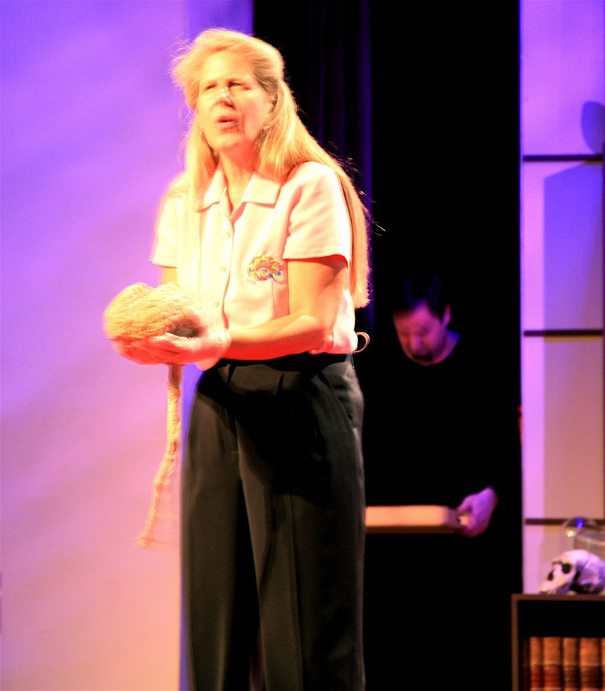

하버드 뇌과학자 질 볼티 테일러는 1996년 좌뇌에 뇌졸중을 겪었습니다. 말도, 숫자도, 이름도 사라진 네 시간 동안 — 그는 우뇌만으로 세상을 봤습니다.
결과 — 경계가 사라지고, 자신의 몸과 공기의 경계가 흐려지고, "나는 우주의 일부"라는 감각이 압도적으로 밀려왔습니다. 그는 TED 강연에서 이 경험을 "다시 돌아가고 싶을 만큼 강렬한 합일감"이라 말했습니다.